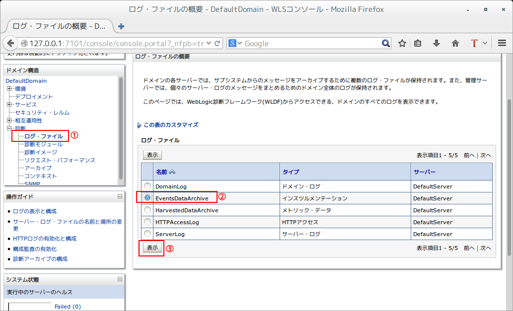

Table of Contents
トラブルシューティング時にログでアプリケーションの動作を追うことが常套手段と言えるで しょう。しかし、アプリケーションにログ出力処理が実装されていないケースもあり得るで しょう。先日そのようなケースに遭遇してまして、メソッドのエントリとリターンのポイント ですらログ出力してくれなかった。コード規模が小さいのであれば、すぐログ出力処理を実装 すればいいでしょうけど、大規模の場合それなりに大変でしょう。
幸い、Weblogicサーバにはアプリケーションケーションの動作イベントを記録するような機能 が提供されている。それはWebLogic診断フレームワークのインスツルメンテーション機能で す。以下はインスツルメンテーション機能の使い方を検証します。
1 検証アプリの作成
- jspxページ１枚、ボタンとテキストを適当に配置する
- ボタンイベントをハンドリングするためのManagedBeanを作成する
2 インスツルメンテーション設定手順
2.1 診断システム・モジュールの作成
診断システム・モジュール一覧にモジュールがあればそれを利用する、なければ適当に新規作成 する。
モジュールをインスツルメンテーション画面へ辿って、「有効」チェックボックスがONである 状態を確認する。OFFの状態場合、状態をONへ変更する。
2.2 アプリケーションの設定
デプロイメントリストから検証用アプリの「構成→インスツルメンテーション」設定画面へ辿っ て、「有効」チェックボックスをONにする。
同じ画面の下にある「カスタム監視を追加」ボタンから監視ポイントの登録を行う。
ポイントカット に監視対象クラスやメソッドを指定することができます。ここの例
execution(public * view.* *(...)) ではviewパッケージ下のすべてのクラスのすべての
メソッドにマッチします。
続いて診断アクション（ポイントカットでマッチした箇所が実行された時に実行する診断アク ション）を指定する。
ここは TraceAction アクションを選択する。各アクションで取得できる情報は ここ を参照する。
これで設定が終わります。サーバを再起動する。
2.3 採集されたイベントデータの確認
採集されたイベントデータは EventsDataArchive ログファイルに保存される。ログファイル
リストの EventsDataArchive から参照することができる。

取れた TraceAction イベントレコード
TraceAction イベントレコードの詳細イメージ
イベントログのファイル実体が domain/servers/DefaultServer/data/store/diagnostics/
の配下に *.DAT バイナリファイルとして保存されている。